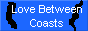
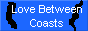

Who am I?
My name is Random (internet name) and I like to make websites. I am a Marylander who was raised deeply into my state's culture, despite an adversion to Old Bay seasoning. I first began web development around the age of ~12 years old when my friend introduced me to it, and soon began programming. I took several computer science classes in highschool (including one cybersecurity class) that helped me round out my skillsets in multiple languages (I would only say im fluent in Python and Java). I worked for 8 months in a fast food job, where in addition with online and school courses, picked up a not-inconsiderable amount of spanish that has developed me into a more cosmopolitan person despite the small-town community I live in. I enjoy playing the piano, composing music, fishing, and reading.
August 2025
The job hunt continues... numerous applications and no responses! Although I understand this is the norm, it does not increase my patience. I am too afraid to apply for another fast-food job, but retail jobs have yet to pick up the phone. Oh well.
July 2025
Hey! All entries below this date are added after they have already happened. They've been added to provide some historic context and a little fluff to the website.
Anyway, I quit smoking earlier this month. I have made my peace and said goodbye. Im currently looking around for a new job (ideally one that doesn't suck) but the options are kind of abysmal.
May 2025
I graduated! Long time coming, I guess. Isn't that true for every graduate? I think im going to miss highschool. I had alot of friends that I only saw during school and will likely never see again... but hey! Im also an adult now. So Its time for my life to move on, now. Im sure i'll meet new people.
February 2025
I let my old website host run out of credits. I dont need to have a website up and I don't care enough to feed it more money. It wasn't that good anyways - my next one will be much better.
December 2024
Quit working at my fuckass job!!! Manager clocked me out because they couldn't afford to pay me, but I don't have a car so I had to walk all the way. It was terrible and I am glad to have left.